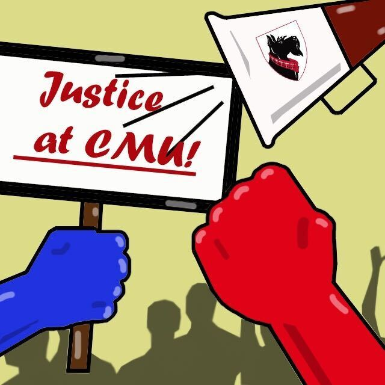

Junior Staff Writer on The Tartan — Carnegie Mellon University Newspaper
Why Journalism
Through my experience on El Vaquero, my high school newspaper, and now The Tartan, I discovered a love for verbal engagement—and not just basic introductions or chatter, but deep conversations and debates. I talk about anything and everything, from mundane algebra homework to debates over campaign finance. I used to interview ad clients, negotiating advertisement prices and resolving issues. I converse with my fellow peers, my teachers, and even professionals off of my school campus. I revel in approaching a stranger and striking up a conversation. My skills go far beyond the newspaper room. Rather, these skills work concurrently and actually aid me with my STEM passion.
My Portfolio
Below are some of my recent univeristy articles as well as a few of my high school journalism pieces.

The Tartan
News
The Tartan Sept. 13, 2020
CMU professors take part in the #ScholarStrike
Professors from across the nation and here at Carnegie Mellon took part in the #ScholarStrike this week, a two-day protest on Sept. 8 and 9 in which some members of academia halted their regular duties to reflect and engage in discussions about racial injustice in America...
Forum
The Tartan Nov. 10, 2020
COVID is creating an atmosphere of uncertainty; CMU should keep the revised schedule
When Carnegie Mellon announced their decision to remove spring break, I immediately hated it. Why would the administration choose to rip away the one thing students and faculty all look forward to? Alas, my first chance to experience a college spring break was taken from me. The thought of enduring a full semester of Carnegie Mellon curriculum and stress without a major break still seems inconceivable. However, after closer examination of the circumstances that forced the hand of the administration shines some light to the decision. The fact of the matter is that under the extenuating circumstances we are all under, the current state of the calendar is the only viable option left, after prioritizing our health and the interests of all students and faculty...
News
The Tartan Jan. 12, 2021
Spring semester update
In preparation for the new semester, Carnegie Mellon University is ramping up its latest addition to its COVID safety measures, Tartan Testing, as President Jahanian announced in December.
Editorial
El Vaquero Feb. 28, 2020
Erase "out of sight, out of mind" mentality
We have all done that stare of shame. After just exiting the freeway, a homeless man in tattered clothes with a plea for help written on a cardboard sign catches your eye. Does he deserve our hard-earned money? Is he pretending to be homeless? Worst of all, what if he is in genuine need, but you misjudged and didn’t help?...
Accomplishments
- Business Manager, Viewpoint Writer, Copy Editor, Artist of High School Paper El Vaquero
- Voted Best Writer, El Vaquero
2019-2020 - Voted Most Valuable Staff Member, El Vaquero
2019-2020 - 3rd Place at Orange County Journalism Write-offs
2019-2020 - Superior at Southern California Journalism Write-offs
2018-2019 - Awarded Advisor's Choice Award
2018-2019 - Honorable Mention at Southern California Journalism Write-offs
2017-2018